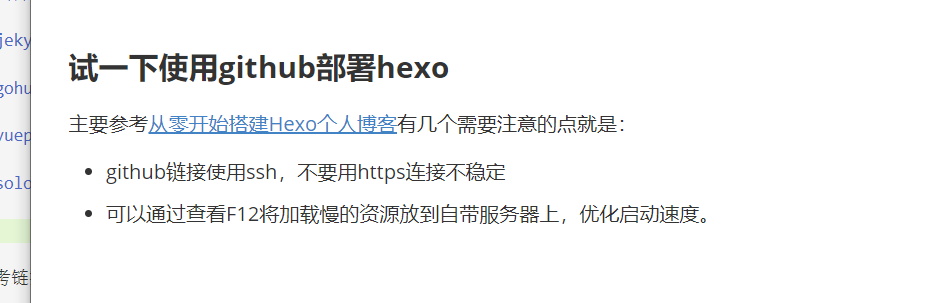

个人博客搭建调研
动态建站
动态建站指的是自己搭建后端和前端，灵活性和功能性强但是开发难度比较高。
静态建站
纯前端界面，不支持登录
wordpress
WordPress是一个以PHP和MySQL为平台的自由开源的博客软件和内容管理系统[5]。WordPress具有插件架构和模板系统。截至2018年4月，排名前1000万的网站中超过30.6%使用WordPress[6]。WordPress是最受欢迎的网站内容管理系统[7]。全球有大约40%的网站(7亿5000个)都是使用WordPress架设网站的。[8]WordPress是目前因特网上最流行的博客系统。[9][10]WordPress在最著名的网络发布阶段中脱颖而出。如今，它被使用在超过7000万个站点上。[11]
Hexo
支持markdown，node.js 搭建
jekyll
gohugo
vuepress
solo
参考链接：
试一下使用github部署hexo
主要参考从零开始搭建Hexo个人博客有几个需要注意的点就是：
- github链接使用ssh，不要用https连接不稳定
- 可以通过查看F12将加载慢的资源放到自带服务器上，优化启动速度。